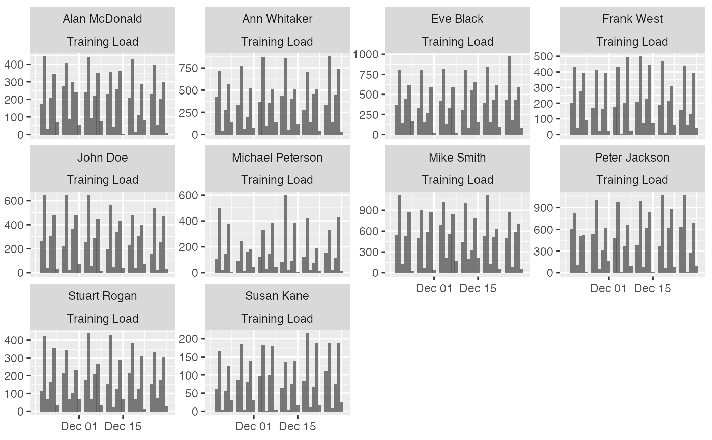
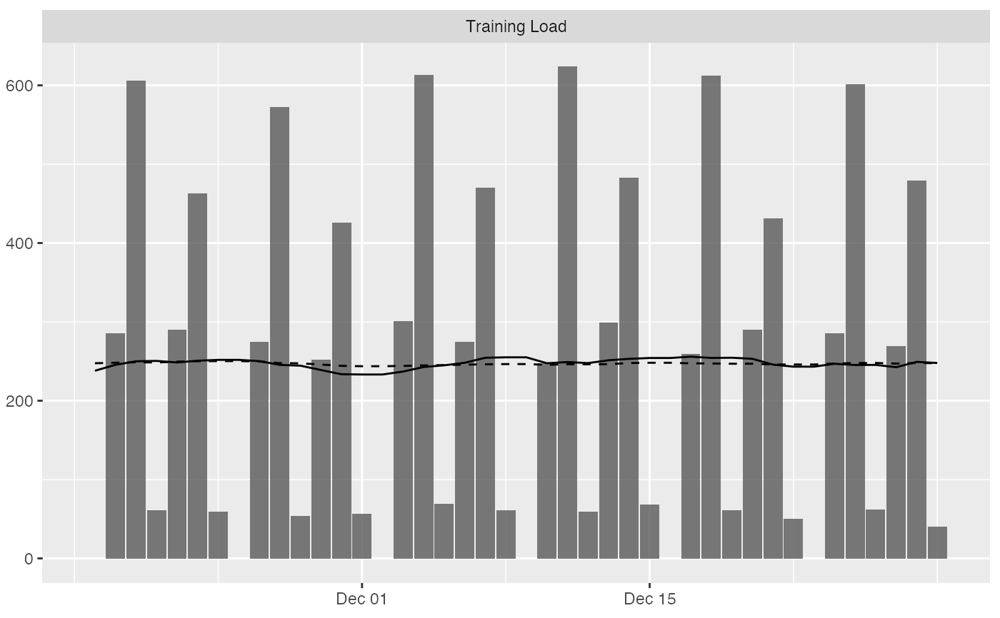
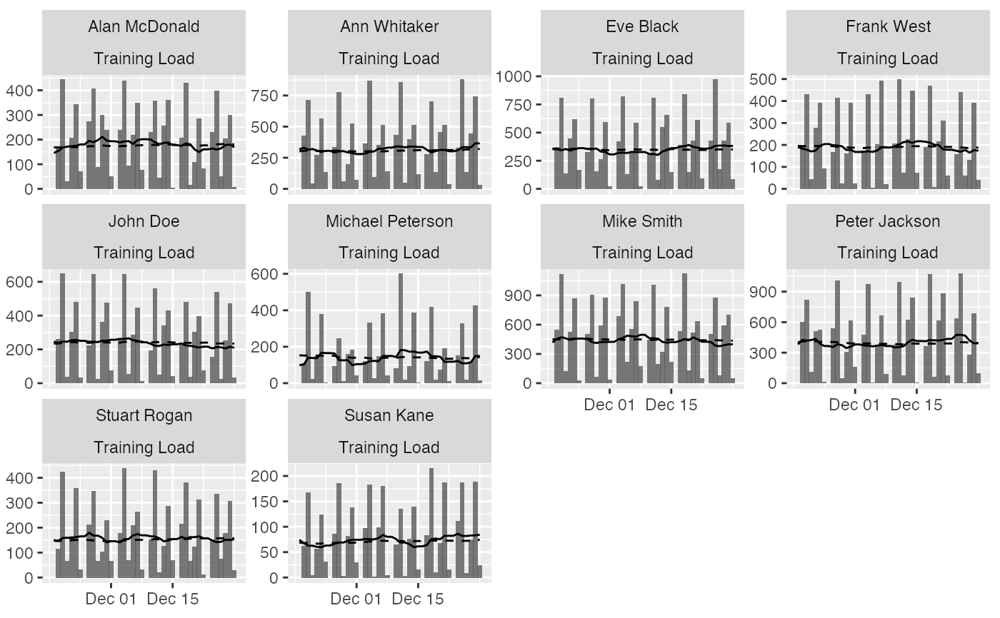
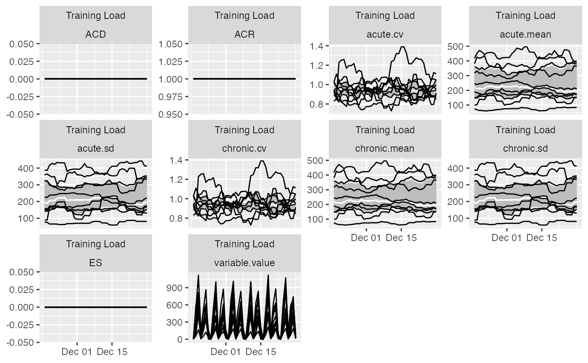
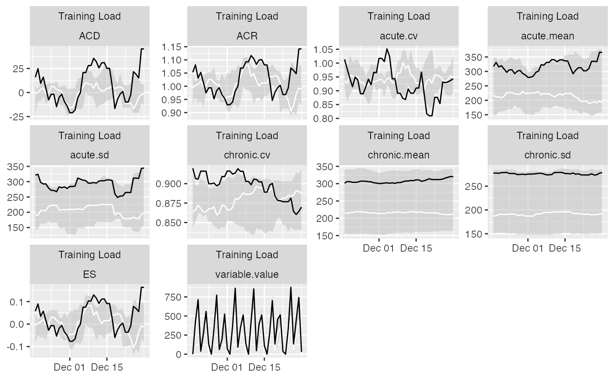
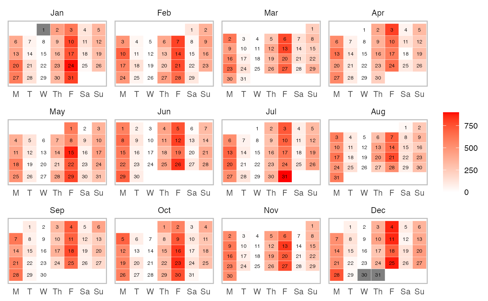
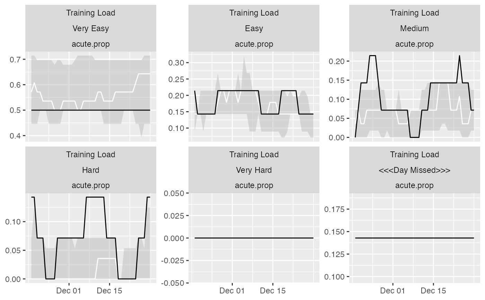

This function plots the selected estimator
# S3 method for athletemonitoring plot(x, type = "line", ...)
| x | Object of class |
|---|---|
| type | Type of the graph. Use "bar", "calendar", "table" or "line" (default). See Examples |
| ... | Extra arguments. See Examples |
# Load monitoring data set data("monitoring") # Filter out only 'Training Load' monitoring <- monitoring[monitoring$Variable == "Training Load", ] # Convert column to date format (or use numeric) monitoring$Date <- as.Date(monitoring$Date, "%Y-%m-%d") # Run the athlete monitoring data preparation prepared_data <- prepare( data = monitoring, athlete = "Full Name", date = "Date", variable = "Variable", value = "Value", acute = 7, chronic = 42, # How should be missing entry treated? # What do we assume? Zero load? Let's keep NA NA_session = NA, # How should missing days (i.e. no entries) be treated? # Here we assume no training, hence zero NA_day = 0, # How should be multiple day entries summarised? # With "load", it is a "sum", witho other metrics that # do not aggregate, it can me "mean" day_aggregate = function(x) { sum(x, na.rm = TRUE) }, # Rolling estimators for Acute and Chronic windows rolling_estimators = function(x) { c( "mean" = mean(x, na.rm = TRUE), "sd" = sd(x, na.rm = TRUE), "cv" = sd(x, na.rm = TRUE) / mean(x, na.rm = TRUE) ) }, # Additional estimator post-rolling posthoc_estimators = function(data) { data$ACD <- data$acute.mean - data$chronic.mean data$ACR <- data$acute.mean / data$chronic.mean data$ES <- data$ACD / data$chronic.sd # Make sure to return the data return(data) }, # Group summary estimators group_summary_estimators = function(x) { c( "median" = median(x, na.rm = TRUE), "lower" = quantile(x, 0.25, na.rm = TRUE)[[1]], "upper" = quantile(x, 0.75, na.rm = TRUE)[[1]] ) } )#>#>#>#>#># Get summary prepared_data#> Athlete monitoring numeric data with the following characteristics: #> #> 10 athletes: #> Alan McDonald, Ann Whitaker, Eve Black, Frank West, John Doe, Michael Peterson, Mike Smith, Peter Jackson, Stuart Rogan, Susan Kane #> #> 363 days: #> From 18263 to 18625 #> #> 5200 total entries #> #> 0 missing entries #> 510 missing days #> #> 1 variables: #> Training Load #> #> 10 estimators: #> variable.value, acute.mean, acute.sd, acute.cv, chronic.mean, chronic.sd, chronic.cv, ACD, ACR, ES#> # A tibble: 10 x 15 #> athlete variable `Total entries` `Day entries` `Missing entrie… #> <chr> <chr> <dbl> <int> <dbl> #> 1 Alan McDonald Training Load 520 363 0 #> 2 Ann Whitaker Training Load 520 363 0 #> 3 Eve Black Training Load 520 363 0 #> 4 Frank West Training Load 520 363 0 #> 5 John Doe Training Load 520 363 0 #> 6 Michael Peterson Training Load 520 363 0 #> 7 Mike Smith Training Load 520 363 0 #> 8 Peter Jackson Training Load 520 363 0 #> 9 Stuart Rogan Training Load 520 363 0 #> 10 Susan Kane Training Load 520 363 0 #> # … with 10 more variables: Missing days <dbl>, Start date <date>, #> # Stop date <date>, Mean <dbl>, SD <dbl>, Min <dbl>, Max <dbl>, Median <dbl>, #> # IQR <dbl>, MAD <dbl>## Plots # Table plot # Produces formattable output with sparklines plot( prepared_data, type = "table", # Use to filter out estimators estimator_name = c("acute.mean", "chronic.mean", "ES", "chronic.sd", "chronic.cv"), # Use to filter out athlete # athlete_name = NULL, # Use to filter out variables # variable_name = NULL, # Show last entries last_n = 42, # Round numbers digits = 2 ) # Bar plot # To plot group average plot( prepared_data, type = "bar" )#>#> Warning: Removed 42 row(s) containing missing values (geom_path).#> Warning: Removed 42 row(s) containing missing values (geom_path).#> Warning: Removed 420 row(s) containing missing values (geom_path).#> Warning: Removed 420 row(s) containing missing values (geom_path).# To filter out athletem variable and add Acute and Chronic lines to the group average: plot( prepared_data, type = "bar", # To filter out athletes # athlete_name = NULL, # To filter out variable # variable_name = NULL, # Add acute mean acute_name = "acute.mean", # Add chronic mean chronic_name = "chronic.mean", # Plot last n entries/days last_n = 42 )#># If you want to plot for each athlete, use trellis=TRUE plot( prepared_data, type = "bar", acute_name = "acute.mean", chronic_name = "chronic.mean", last_n = 42, trellis = TRUE )# Line plots # These plots represent summary of the rollins estimators plot( prepared_data, type = "line", # To filter out athletes # athlete_name = NULL, # To filter out variables # variable_name = NULL, # To filter out estimators # estimator_name = NULL, # Tell graph where the lower group estimator is # which is in this case 25%th percentile of the group group_lower_name = "group.lower", # The name of the centrality estimator of the group group_central_name = "group.median", # Tell graph where the upper group estimator is # which is in this case 75%th percentile of the group group_upper_name = "group.upper", # Use trellis if you do not plot for a single individual trellis = TRUE )# Previous chart looks messy because it plot all athletes # To avoid that, filter out only one athlete plot( prepared_data, type = "line", # To filter out athletes athlete_name = "Ann Whitaker", group_lower_name = "group.lower", group_central_name = "group.median", group_upper_name = "group.upper", trellis = TRUE )# Calendar heatmap plot plot( prepared_data, type = "calendar", # To filter out athletes athlete_name = "Ann Whitaker", # To filter out variables variable_name = "Training Load", # To print estimator estimator_name = "variable.value", # Or use "entries" # To filter out last days last_n = 365, # To setup colors low_color = "white", high_color = "red", na_color = "grey50", # Should the whole year be plotted? full_year = TRUE, # Short weekdays? short_weekday = TRUE, # Label size label_size = 2, # Aggregation function in the case multiple athletes/variables/levels are used aggregate_func = mean )# Nominal data # Create nominal variable monitoring$Value_nominal <- cut( monitoring$Value, breaks = 5, labels = c("Very Easy", "Easy", "Medium", "Hard", "Very Hard"), include.lowest = TRUE) # Run the athlete monitoring data preparation prepared_data <- prepare( data = monitoring, athlete = "Full Name", date = "Date", variable = "Variable", value = "Value_nominal", acute = 7, chronic = 42, # How should be missing entry treated? NA_session = "<<<Session Missed>>>", # How should missing days (i.e. no entries) be treated? NA_day = "<<<Day Missed>>>", # How should be multiple day entries summarised? # This is different with levels, for example # when there are two sessions, one is Low and one Hard # if you use mean, then Low and Hard will be 0.5, with sum # both will be 0.5, in which case the level probabilities will be # summed to 1 day_aggregate = function(x) { mean(x, na.rm = TRUE) }, # Rolling estimators for Acute and Chronic windows rolling_estimators = function(x) { c( "prop" = mean(x, na.rm = TRUE) ) }, # Additional estimator post-rolling posthoc_estimators = function(data) { data$ACD <- data$acute.prop - data$chronic.prop data$ACR <- data$acute.prop / data$chronic.prop # Make sure to return the data return(data) }, # Group summary estimators group_summary_estimators = function(x) { c( "median" = median(x, na.rm = TRUE), "lower" = quantile(x, 0.25, na.rm = TRUE)[[1]], "upper" = quantile(x, 0.75, na.rm = TRUE)[[1]] ) } )#>#>#>#>#>#>prepared_data#> Athlete monitoring nominal data with the following characteristics: #> #> 10 athletes: #> Alan McDonald, Ann Whitaker, Eve Black, Frank West, John Doe, Michael Peterson, Mike Smith, Peter Jackson, Stuart Rogan, Susan Kane #> #> 363 days: #> From 18263 to 18625 #> #> 34260 total entries #> #> 0 missing entries #> 510 missing days #> #> 1 variables: #> Training Load #> #> 6 levels: #> <<<Day Missed>>>, Easy, Hard, Medium, Very Easy, Very Hard #> #> 5 estimators: #> variable.value, acute.prop, chronic.prop, ACD, ACR#> # A tibble: 60 x 10 #> athlete variable level `Total entries` `Day entries` `Missing entrie… #> <chr> <chr> <fct> <int> <int> <int> #> 1 Alan McDo… Training … Very Ea… 571 363 0 #> 2 Alan McDo… Training … Easy 571 363 0 #> 3 Alan McDo… Training … Medium 571 363 0 #> 4 Alan McDo… Training … Hard 571 363 0 #> 5 Alan McDo… Training … Very Ha… 571 363 0 #> 6 Alan McDo… Training … <<<Day … 571 363 0 #> 7 Ann Whita… Training … Very Ea… 571 363 0 #> 8 Ann Whita… Training … Easy 571 363 0 #> 9 Ann Whita… Training … Medium 571 363 0 #> 10 Ann Whita… Training … Hard 571 363 0 #> # … with 50 more rows, and 4 more variables: Missing days <int>, #> # Start date <date>, Stop date <date>, Proportion <dbl># Plots plot( prepared_data, type = "line", # To filter out athletes athlete_name = "Ann Whitaker", # To filter out variables variable_name = "Training Load", # To filter out estimators estimator_name = "acute.prop", group_lower_name = "group.lower", group_central_name = "group.median", group_upper_name = "group.upper", trellis = TRUE )